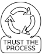

Fail Fast
"Fail fast" is a principle that emphasizes thorough testing and incremental development of the product to make sure we fix the bugs during the development phase. We want to catch errors early and correct them so they don't build on each other. That way, we have fewer errors in the final product when it is more costly to fix. This approach can lead to more creativity as it requires reflection on all your decisions throughout the process, thus improving the final product.
Tools to Use: IDE Debuggers

Integrated Development Environments (IDEs) such as VSCode can help debug our code and catch common errors like syntax, but we need extensive testing to catch bigger conceptual errors in our code. They also allow you to step into the code and analyze variables, which can help identify errors and bugs quickly. That way, you have the time to understand the bug before fixing it.
Tools to Use: Thorough Testing
Our tests should try to check if our program does what it is supposed to but they should also be adversarial; the test should try to make our program fail. We should include some tests which are supposed to fail. This way we avoid false positives. So, our goal is to have tests to make sure our program passes and fails at the right time, when we expect it to.
Bad testing does not cover all the cases, and gives us an inaccurate picture of our code, and leads to user dissatisfaction, hence causing the overall product to fail. Incremental and earlier failure in the process is better than overall failure in the end. The journey to the final product is important and should be filled with small failures. It costs more to fix these mistakes later in the process or when the product is released.
Common Context
In object-oriented programming, we can implement a fast-fail approach when we use exceptions. Exceptions help us deal with errors we anticipate right away rather than letting them pass only to fail later.
For example, a fail-fast iterator will throw a ConcurrentModificationException when it sees the elements in a collection are changed during iteration. They help us catch errors early at the development stage, rather than letting the bug sneak through undetected and possibly pop up only when users try the product.
Remember:
- Stay Positive
- The journey is just as important as the destination
- Embrace failure! Look forward to it!
Contact Us
This site is only possible through the efforts of students and educators like you. If you have a resource you think could be added to the page, an idea for a page on TransparenCS, or any critiques, suggestions, funny memes, questions, or poems, please contact us!